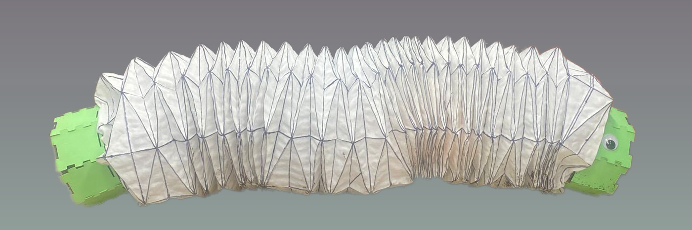

Overview
For this project, I led three classmates through 3 sprints spread across 8 weeks to design and build a soil-sensing snake robot.
I worked on the mechanical design, including the u-links, providing the snake with 6 degrees of freedom to slither, and designing and manufacturing the skin to cover the robot and protect the mechanisms from any dirt debris. I also worked on integrating the electronics, which included testing the power supply, coding the motors and sensors, along with connecting the raspberry pi pico w's to our ground station, a raspberry pi 4, through wifi.
Learnings
Along with learning how to manage people, making sure tasks were done on time and correctly, I also learned a lot about ideating and iterating mechanical designs quickly.
For the skin, I took inspiration from origami patterns I had worked with before to create a flexible skin that would stretch and compress along with the snake's movement. Once we got a pattern down, we had to figure out how to manufacture it using a water proof material. We wanted to stay away from 3d printing, as to not release micro plastics into the soil, so we were left with two options, leather and cloth. We ended up going with cloth even though it took longer to make because when we tested leather, it was too stiff to flex properly. We got the idea of using cloth from composites. Instead of using epoxy, we used elmers glue to stiffen the cloth inside each triangle while leaving the edges of each triangle glueless, allowing the cloth to act as a hinge. This ultimately gave the cloth flexibility while still being stiff enough to keep its shape. The images below show the paper iterations, clamping the cloth after the glue dried and it was sewn together, and a video of the initial testing rig making sure the pattern was flexible enough.
For the u-links, we started with a simple rectangle design, removing material to give it more range of motion. We added mounts for motors and batteries, leaving space for wiring to go through. After initial testing, we extended the length of the u-links to give it more torque and move farther. After looking at other ways to manufacture, we ended up deciding to 3d printing the links, as the skin would protect the links from shedding micro plastics and because of the shape, this would be hard to make with other manufacturing methods. The images below show the initial CAD and final u-joint design.

To read more about the project, visit our project website.